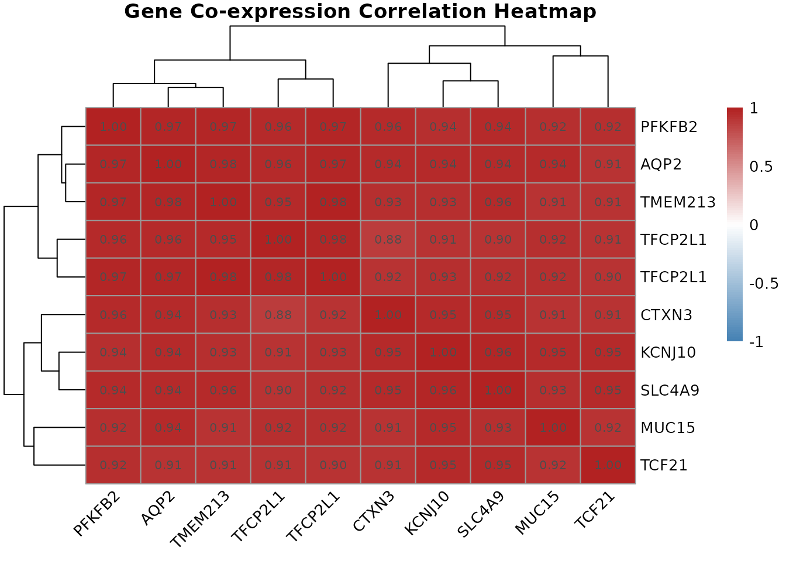
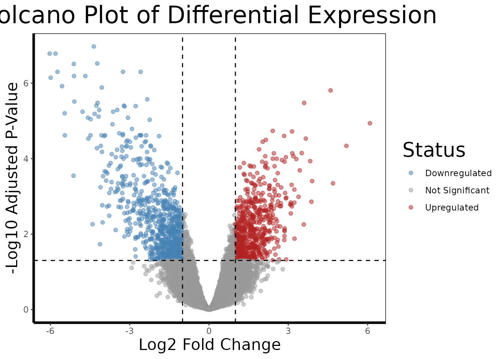
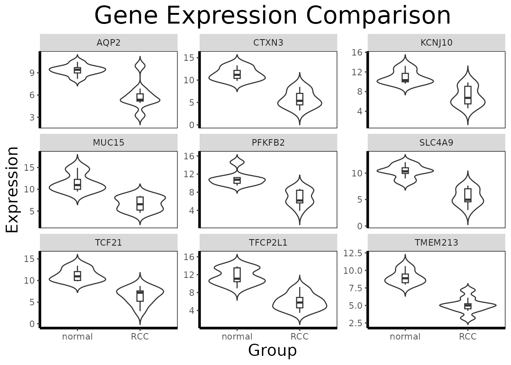
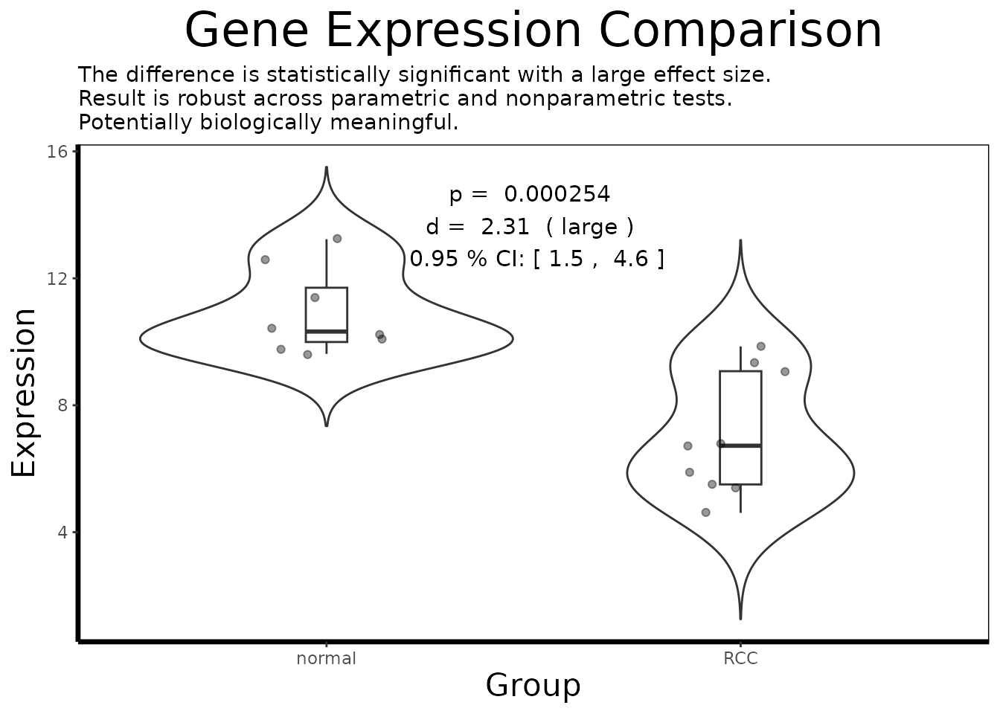

BioUtils: A Case Study in Transcriptomic Analysis of Renal Cell Carcinoma
Spencer Treadway
2026-05-06
Source:vignettes/bioutils-case-study.Rmd
bioutils-case-study.RmdOverview
Understanding which genes are expressed differently in diseased versus healthy tissue is one of the central questions of modern molecular biology. When a cell becomes cancerous, hundreds or thousands of genes may change their activity levels, some becoming dramatically more active, others effectively silenced. Identifying these changes is essential for discovering what drives the disease, finding diagnostic biomarkers, and ultimately developing targeted therapies.
This vignette walks through a complete transcriptomic analysis of renal cell carcinoma (RCC), the most common form of kidney cancer, using publicly available gene expression microarray data from the NCBI Gene Expression Omnibus (GEO). The dataset, GDS507, contains expression profiles from 17 samples, a mix of clear cell RCC tumor tissue and matched normal kidney tissue, measured across ~22,000 probe sets on an Affymetrix HG-U133A microarray.
We will use the BioUtils package to carry out the full analytical workflow: data import, quality control, differential expression analysis, visualization, co-expression analysis, and multi-gene predictive modeling. Each step is explained in terms of both what the code is doing and what it means biologically.
Part 1: Data Import and Quality Control
1.1 What Is a Microarray?
Before we load data, it helps to understand what we are working with. A DNA microarray is a glass slide or chip printed with tens of thousands of short DNA sequences called probes, each designed to bind to the RNA transcribed from a specific gene. When a biological sample is processed and washed over the chip, messenger RNA from active genes hybridizes to its matching probe and emits a fluorescent signal. The brightness of each spot reflects how actively that gene is being transcribed, its expression level.
The result is a table of ~22,000 numbers per sample, one for each probe on the chip, representing the transcriptional activity of the cell at the moment the sample was collected. Our job is to extract biologically meaningful signal from this high-dimensional data.
1.2 Loading the Dataset
The GEO archive distributes datasets in SOFT format files. BioUtils
reads these directly using load.geo.soft(), which wraps
GEOquery to parse the file and return a structured
ExpressionSet object:
library(BioUtils)
eset <- load.geo.soft("", "GDS507", log.transform = TRUE)The log.transform = TRUE argument is important here.
Affymetrix arrays report raw intensity values that span several orders
of magnitude and are right-skewed. Applying a log2 transformation
compresses this range, makes the data more symmetric, and means that
differences in expression become differences in fold change, a 1-unit
increase on the log2 scale represents a doubling of expression. This is
standard preprocessing for Affymetrix data and is necessary before any
statistical testing.
1.3 Extracting the Data Components
extract.expression() decomposes the
ExpressionSet into the three components used throughout
BioUtils:
geo <- extract.expression(eset)This returns a named list with:
-
geo$expression- a 22,645 by 17 matrix of log2-transformed probe intensities. Each row is a probe (a specific DNA sequence on the chip), each column is a patient sample. -
geo$phenotype- a data frame of sample metadata. Most importantly for us, thedisease.statecolumn identifies each sample as either"RCC"or"normal". -
geo$gene- a data frame of probe annotations mapping each probe ID to the gene it targets (gene symbol, full title, chromosomal location, etc.).
1.4 Principal Component Analysis for Quality Control
With 22,000 variables and 17 samples, the data is far too high-dimensional to inspect directly. Principal Component Analysis (PCA) is the standard first step for understanding the global structure of the dataset. It finds the axes of maximum variance in the data and projects each sample onto these axes, so that similar samples cluster together in a 2D plot.
Before any analysis, we want to confirm that the largest source of variation in the data is the biological signal we care about, disease state, rather than technical artifacts like batch effects or sample processing date.
pca.plot(geo$expression, geo$phenotype, color.by = "disease.state")
pca.plot() runs PCA on the transposed expression matrix
(so samples are the observations and probes are the variables), extracts
the first two principal components, and plots each sample as a point
colored by disease state.
A well-separated PCA plot, with RCC and normal samples forming distinct clusters, tells us that the transcriptional differences between tumor and normal tissue are large enough to dominate the global variance structure of the dataset. This is a reassuring quality control check: it means the biology is strong and our statistical tests should have good power to detect it. If instead the samples were mixed randomly or clustered by something unrelated (a technician ID, a plate number), we would need to investigate and correct for that before proceeding.
Part 2: Genome-Wide Differential Expression
2.1 The Statistical Challenge
We want to know, for each of the 22,645 probes, whether the average expression level differs significantly between RCC and normal tissue. The naive approach, run a t-test on each probe separately, has a fundamental problem: if you run 22,645 independent tests at a 5% significance threshold, you expect to get roughly 1,132 false positives by chance alone, even if nothing is truly different. This is the multiple testing problem.
2.2 Running limma
BioUtils uses the limma (Linear Models for Microarray
data) framework for differential expression analysis, which solves both
problems elegantly:
de.results <- run.limma.de(geo, condition.col = "disease.state")Rather than testing each gene independently, limma fits
a linear model to all probes simultaneously. Its key innovation is
empirical Bayes moderation: it borrows variance
information across all genes to produce a stabilized estimate of
within-group variability for each probe. Genes with few samples or noisy
measurements benefit from this pooled information, which prevents genes
with accidentally small variance estimates from generating artificially
inflated t-statistics.
The result, called a TopTable, is a data frame with one row per probe, sorted by evidence of differential expression. The most important columns are:
-
logFC- the log2 fold change between RCC and normal tissue. A value of 2 means RCC samples express that gene 4-fold higher on average. A value of -1 means expression is halved in RCC. -
adj.P.Val- the p-value after Benjamini-Hochberg correction for multiple testing. This controls the false discovery rate (FDR): anadj.P.Valof 0.05 means we expect 5% of the probes we call significant to be false positives, rather than 5% of all tests to be wrong.
# Look at the top 10 most significantly differentially expressed probes
head(de.results[order(de.results$adj.P.Val), ], 10)
#> logFC AveExpr t P.Value adj.P.Val B
#> 228581_at -4.356150 7.675183 -15.41548 4.729249e-12 1.070939e-07 17.10870
#> 236630_at -6.025968 10.544520 -14.24191 1.851007e-11 1.651488e-07 15.94545
#> 231391_at -5.808044 7.192175 -14.10346 2.187884e-11 1.651488e-07 15.80081
#> 227238_at -4.226197 6.619400 -13.38519 5.328108e-11 3.016375e-07 15.02365
#> 233183_at -5.114477 6.485488 -13.18816 6.848514e-11 3.101692e-07 14.80233
#> 226733_at -2.586442 9.826367 -12.63571 1.407730e-10 5.020745e-07 14.16213
#> 229529_at -3.253671 7.960713 -12.47185 1.751676e-10 5.020745e-07 13.96651
#> 240183_at -5.729856 8.225030 -12.46252 1.773723e-10 5.020745e-07 13.95530
#> 227642_at -5.106025 10.616703 -12.13381 2.769970e-10 6.501757e-07 13.55437
#> 229341_at -4.676905 8.043225 -12.10765 2.871167e-10 6.501757e-07 13.521982.3 The Volcano Plot
A volcano plot is the standard visualization for a differential expression result set. It places every probe in a two-dimensional space: fold change on the x-axis (how large the difference is) and statistical significance on the y-axis (how confident we are in that difference). The most biologically interesting genes, large effect, high confidence, appear in the upper corners.
volcano.plot(de.results, fc.threshold = 1, fdr.threshold = 0.05)
The dashed lines mark our thresholds: genes must have an absolute log2 fold change greater than 1 (a 2-fold change) AND an FDR-adjusted p-value below 0.05 to be colored as differentially expressed. Genes in red are upregulated in RCC relative to normal; genes in blue are downregulated.
In kidney cancer, we might expect to see upregulation of genes involved in angiogenesis (tumor blood vessel formation), glycolysis (many kidney cancers switch their metabolism even under normal oxygen levels, the Warburg effect), and cell proliferation, while genes involved in normal kidney function and differentiation may be downregulated.
2.4 Identifying Top Candidates
We now extract the probe IDs of the most significantly differentially expressed genes to carry forward into deeper analysis:
# Extract the 10 most significant probe IDs (row names of the TopTable)
top.probes <- rownames(head(de.results[order(de.results$adj.P.Val), ], 10))
# Resolve probe IDs to human-readable gene names
top.genes <- get.gene.name(geo$gene, top.probes)
# Some probes on the array do not map to annotated genes, remove those
annotated.mask <- which(top.genes != "")
top.probes <- top.probes[annotated.mask]
top.genes <- top.genes[annotated.mask]
cat("Top differentially expressed genes:\n")
#> Top differentially expressed genes:
print(top.genes)
#> [1] "6-phosphofructo-2-kinase/fructose-2,6-biphosphatase 2"
#> [2] "mucin 15, cell surface associated"
#> [3] "transcription factor CP2-like 1"
#> [4] "potassium voltage-gated channel subfamily J member 10"
#> [5] "transcription factor CP2-like 1"
#> [6] "transcription factor 21"
#> [7] "cortexin 3"
#> [8] "solute carrier family 4 member 9"
#> [9] "aquaporin 2"
#> [10] "transmembrane protein 213"get.gene.name() performs the reverse lookup of
find.probe.by.gene(), given probe IDs from the TopTable, it
retrieves the human-readable gene title from the annotation data frame.
The filtering step removes probes that are present on the array but have
no gene annotation in the database (common in older array designs).
Part 3: Deep-Dive Single-Gene Analysis
The limma TopTable tells us which genes are differentially expressed. Now we use BioUtils to understand how they are expressed, the magnitude, direction, and robustness of each gene’s difference.
3.1 Retrieving and Preparing Expression Data
# Retrieve expression values for all top probes as a matrix
expr.mat <- get.gene.expression(geo$expression, top.probes)
# Build the long-format analysis data frame
df.multi <- build.analysis.df(expr.mat, geo$phenotype, geo$gene)get.gene.expression() slices the rows of the full
expression matrix corresponding to our selected probes.
build.analysis.df() then pivots this wide matrix (probes by
samples) into a long-format data frame where each row
represents one gene-sample observation, with columns for gene name,
expression value, and disease state group. This format is required by
all downstream analysis and visualization functions.
3.2 Multi-Gene Overview
# Faceted violin + boxplot across all top genes simultaneously
gene.analysis.plot(df.multi)
In multi-gene mode, gene.analysis.plot() creates a
faceted panel, one violin/boxplot per gene, allowing visual comparison
of expression patterns across the entire candidate set at once. This is
useful for identifying which genes show large, clean separation between
groups and which show more overlap or outlier-driven differences.
3.3 Focused Single-Gene Analysis
For the gene showing the most dramatic separation, we perform a full statistical analysis:
# Subset to a single gene of interest
gene.of.interest <- get.gene.name(geo$gene, top.probes[1], use.symbols=TRUE)
df.single <- df.multi[which(df.multi$gene == gene.of.interest), ]
# Annotated single-gene visualization
gene.analysis.plot(df.single)In single-gene mode, gene.analysis.plot() runs
analyze.gene() internally and annotates the plot with the
key statistical results.
3.4 Understanding analyze.gene()
result <- analyze.gene(df.single)
cat(result$interpretation)
#> The difference is statistically significant with a large effect size.
#> Result is robust across parametric and nonparametric tests.
#> Potentially biologically meaningful.analyze.gene() integrates multiple statistical
perspectives into a single object. It is worth understanding what each
component contributes:
The adaptive t-test
(result$raw$parametric): BioUtils first runs
var.test() to check whether the two groups have equal
variances. If they do not (a common occurrence in gene expression data,
where disease states often increase expression variability), it
automatically uses Welch’s t-test, which does not
assume equal variances, rather than the standard Student’s t-test. This
prevents a common source of inflated false positives.
Cohen’s d (result$effect.size): A
p-value alone does not tell you whether a statistically significant
difference is biologically meaningful. With 17 samples, even a tiny
difference in means can reach statistical significance. Cohen’s d is a
standardized effect size, the difference in group means
divided by the pooled standard deviation, that puts the magnitude of the
difference in context. A d of 0.2 is small; 0.5 is moderate; 0.8 or
above is large. In a clinical context, genes with small effect sizes are
unlikely to serve as robust biomarkers even if they are highly
significant.
Bootstrapped confidence interval
(result$confidence.interval): The confidence interval
around Cohen’s d quantifies our uncertainty about the true effect size
given the sample size. A narrow CI (e.g., [0.8, 1.2]) means we have a
precise estimate; a wide CI (e.g., [0.1, 1.5]) means the true effect
could be anywhere from negligible to very large, and we should be
cautious about strong claims.
The Wilcoxon rank-sum test
(result$nonparametric.p): The t-test assumes that
expression values are roughly normally distributed within each group.
Gene expression data often violates this assumption, particularly when
one group has outlier samples. The Wilcoxon test makes no distributional
assumptions and provides an independent check. When both tests agree
(result$robustness), we can be more confident in the
result. When they disagree, t-test significant, Wilcoxon not, the result
may be driven by distributional differences rather than a genuine shift
in the population mean.
# Inspect individual components
cat("Effect size (Cohen's d):", round(result$effect.size, 3), "\n")
#> Effect size (Cohen's d): 2.312
cat("Effect size class: ", result$effect.size.class, "\n")
#> Effect size class: large
cat("95% CI: [",
round(result$confidence.interval$lower, 3), ",",
round(result$confidence.interval$upper, 3), "]\n")
#> 95% CI: [ 1.53 , 4.54 ]
cat("Parametric p-value: ", signif(result$p.value, 3), "\n")
#> Parametric p-value: 0.000254
cat("Nonparametric p-value: ", signif(result$nonparametric.p, 3), "\n")
#> Nonparametric p-value: 0.000329
cat("Robustness: ", result$robustness, "\n")
#> Robustness: robust across parametric and nonparametric tests
cat("Biological assessment: ", result$biological.relevance, "\n")
#> Biological assessment: Potentially biologically meaningfulPart 4: Pathway-Level Interpretation with GSEA
So far every analysis has focused on individual genes, which ones are differentially expressed, how large their effects are, and which ones jointly predict disease state. But genes do not act in isolation. They participate in coordinated biological pathways: cascades of molecular events that together accomplish a cellular function. The limma TopTable tells us which genes change; Gene Set Enrichment Analysis (GSEA) tells us what those changes mean at the level of biology.
4.1 What Is a Gene Set?
A gene set is simply a curated list of genes known
to participate in the same biological process. The Molecular Signatures
Database (MSigDB) maintains thousands of such sets organized into
collections. The most widely used collection for disease studies is the
Hallmark collection (category = "H"),
which contains 50 gene sets representing well-defined biological states,
things like “HYPOXIA”, “MYC_TARGETS_V1”, “INFLAMMATORY_RESPONSE”, and
“EPITHELIAL_MESENCHYMAL_TRANSITION”. Each set was assembled by expert
curation to be coherent and minimally overlapping with the others.
For kidney cancer specifically, we might expect to see strong enrichment of hypoxia-related gene sets. Clear cell RCC commonly inactivates the VHL tumor suppressor gene, which normally targets the HIF1 transcription factor for degradation. Without VHL, HIF1 accumulates and drives a transcriptional program mimicking chronic oxygen deprivation, activating genes for blood vessel formation, glucose uptake, and anaerobic metabolism. This is one of the best-characterized molecular signatures in all of oncology, and GSEA is an ideal tool for detecting it.
4.2 Loading Gene Sets
We use the msigdbr package to download the Hallmark gene
sets as a named list, which is the format run.gsea()
expects:
# Download Hallmark gene sets for Homo sapiens
hallmark.df <- msigdbr::msigdbr(species = "Homo sapiens", category = "H")
# Convert to a named list: pathway name -> character vector of gene symbols
pathways <- split(hallmark.df$gene_symbol, hallmark.df$gs_name)
# Each element is a vector of gene symbols belonging to that pathway
cat("Number of Hallmark gene sets:", length(pathways), "\n")
#> Number of Hallmark gene sets: 50
cat("Example - first 6 genes in HALLMARK_HYPOXIA:\n")
#> Example - first 6 genes in HALLMARK_HYPOXIA:
print(head(pathways[["HALLMARK_HYPOXIA"]]))
#> [1] "ACKR3" "ADM" "ADORA2B" "AK4" "AKAP12" "ALDOA"4.3 Running GSEA
GSEA works on a ranked gene list, all genes in the experiment ordered from most upregulated to most downregulated, rather than a filtered list of significant hits. This is an important distinction from simpler enrichment methods that only ask “are pathway genes over-represented among my significant hits?” GSEA asks “do pathway genes cluster at the top or bottom of the full ranked list?” which makes it sensitive to coordinated shifts across an entire pathway even when no individual gene clears a significance threshold.
The ranking metric used by run.gsea() is log2 fold
change from the limma TopTable: genes at the top are the most
upregulated in RCC relative to normal, and genes at the bottom are the
most downregulated.
gsea.results <- run.gsea(de.results, geo$gene, pathways, min.size = 15, max.size = 500)
# Sort by adjusted p-value and inspect the top enriched pathways
gsea.results <- gsea.results[order(gsea.results$padj), ]
print(head(gsea.results[, c("pathway", "NES", "pval", "padj", "size")], 10))
#> pathway NES pval
#> <char> <num> <num>
#> 1: HALLMARK_INTERFERON_GAMMA_RESPONSE 2.583617 7.169261e-11
#> 2: HALLMARK_ALLOGRAFT_REJECTION 2.347024 8.755287e-07
#> 3: HALLMARK_TNFA_SIGNALING_VIA_NFKB 2.169456 8.485207e-06
#> 4: HALLMARK_INTERFERON_ALPHA_RESPONSE 2.037790 1.983990e-04
#> 5: HALLMARK_EPITHELIAL_MESENCHYMAL_TRANSITION 1.841121 2.721379e-04
#> 6: HALLMARK_HYPOXIA 1.793828 1.042539e-03
#> 7: HALLMARK_INFLAMMATORY_RESPONSE 1.785555 1.591620e-03
#> 8: HALLMARK_OXIDATIVE_PHOSPHORYLATION -1.771289 1.634470e-03
#> 9: HALLMARK_XENOBIOTIC_METABOLISM -1.788475 1.528082e-03
#> 10: HALLMARK_MTORC1_SIGNALING 1.653165 3.837878e-03
#> padj size
#> <num> <int>
#> 1: 3.226168e-09 67
#> 2: 1.969940e-05 38
#> 3: 1.272781e-04 59
#> 4: 2.231989e-03 32
#> 5: 2.449241e-03 64
#> 6: 7.819042e-03 63
#> 7: 8.172351e-03 58
#> 8: 8.172351e-03 56
#> 9: 8.172351e-03 50
#> 10: 1.727045e-02 694.4 Interpreting the Results
The two most important columns in the GSEA output are:
NES (Normalized Enrichment Score): The
core statistic of GSEA. A positive NES means the gene set is enriched
among genes upregulated in RCC, the genes belonging to this pathway tend
to cluster at the top of the ranked list. A negative NES means the
pathway is enriched among downregulated genes, suppressed in RCC
relative to normal tissue. The normalization accounts for gene set size,
so NES values are comparable across sets.
padj: The NES is tested for
significance by permuting the gene labels and recomputing enrichment
scores under the null hypothesis that genes are randomly distributed in
the ranked list. padj is the resulting p-value after
Benjamini-Hochberg correction across all tested pathways.
leadingEdge: The subset of genes from
the pathway that contribute most to driving the enrichment score. These
are the most biologically interesting genes within an enriched pathway,
the ones at the “leading edge” of the ranked list. They are strong
candidates for follow-up with analyze.gene().
# Extract the leading edge genes of the top enriched pathway
top.pathway <- gsea.results$pathway[1]
leading.genes <- unlist(gsea.results$leadingEdge[1])
cat("Top enriched pathway:", top.pathway, "\n")
#> Top enriched pathway: HALLMARK_INTERFERON_GAMMA_RESPONSE
cat("Leading edge genes:\n")
#> Leading edge genes:
print(leading.genes)
#> [1] "ST8SIA4" "IRF1" "SAMHD1" "SSPN" "GBP4" "SLAMF7" "XAF1"
#> [8] "IL18BP" "NLRC5" "RSAD2" "LATS2" "LCP2" "CMPK2" "OAS3"
#> [15] "PTPN2" "ZNFX1" "RNF213" "SAMD9L" "CMKLR1" "HELZ2" "RAPGEF6"
#> [22] "NAMPT" "IFIT3" "STAT1" "IFNAR2" "PARP14" "SP110" "PELI1"
#> [29] "CD274" "EPSTI1" "OAS2" "IFIT2" "RBCK1" "ZBP1" "EIF2AK2"
#> [36] "STAT2" "BANK1" "PML" "TRIM25" "NOD1" "LYSMD2" "ARID5B"
# Find probes for the leading edge genes and perform single-gene deep-dives
leading.probes <- find.probe.by.gene(geo$gene, leading.genes)
leading.probes <- leading.probes[leading.probes != ""]
if(length(leading.probes) > 0)
{
leading.expr <- get.gene.expression(geo$expression, leading.probes)
df.leading <- build.analysis.df(leading.expr, geo$phenotype, geo$gene)
gene.analysis.plot(df.leading)
}This closes the analytical loop: GSEA identifies which biological
programs are dysregulated in RCC at the pathway level, and the leading
edge genes point us back to the individual-gene tools,
analyze.gene() and gene.analysis.plot(), to
characterize the most important drivers within each pathway.
Part 5: Multi-Gene Relationships
Individual gene analysis tells us about each gene in isolation. But biology is a system, genes do not act alone. They are connected in regulatory networks, share transcription factors, and participate in common pathways. BioUtils provides two complementary tools for exploring these multi-gene relationships.
5.1 Co-expression Correlation Heatmap
Genes that are regulated together tend to show correlated expression patterns across samples: when one goes up, the other goes up. These co-expression relationships can suggest shared regulatory control, functional partnership, or membership in the same biological pathway.
# Compute pairwise Pearson correlations between our top probes
cor.mat <- gene.correlation.matrix(geo$expression, top.probes, method = "pearson")
# Visualize with hierarchical clustering
correlation.heatmap.plot(cor.mat, gene.names = get.gene.name(geo$gene, top.probes, use.symbols=TRUE))
gene.correlation.matrix() computes the full pairwise
correlation matrix across all samples.
correlation.heatmap.plot() then visualizes this as a
clustered heatmap, where hierarchical clustering reorders rows and
columns so that genes with similar co-expression profiles are placed
next to each other. Red cells indicate strongly co-expressed gene pairs;
blue cells indicate anti-correlated pairs (when one goes up, the other
tends to go down).
Clusters of co-expressed genes visible in the heatmap often correspond to genes in the same biological pathway or under the control of the same transcription factor. In a renal cell carcinoma context, you might see a cluster of angiogenesis-related genes (driven by HIF1 pathway activation, common in RCC) all moving together, or a cluster of genes involved in fatty acid metabolism.
5.2 LASSO Regression for Predictive Biomarker Discovery
Co-expression tells us about correlations. But a separate question
is: which genes, taken together, best discriminate RCC
from normal tissue? This is a classification problem, and it is where
fit.lasso() comes in.
# Encode disease state as a binary outcome variable
phenotype.binary <- ifelse(geo$phenotype$disease.state == "RCC", 1, 0)
# Fit LASSO logistic regression across all top probes simultaneously
lasso.fit <- fit.lasso(geo$expression, phenotype.binary)
# Extract genes selected by LASSO at the 1-standard-error lambda
coef.mat <- coef(lasso.fit, s = "lambda.1se")
selected <- coef.mat[coef.mat[, 1] != 0, ]
print(selected)
#> (Intercept) 222405_at 223798_at 226733_at 226851_at 227238_at
#> 4.58244434 -0.49969262 0.59096443 -0.59527813 -0.02235620 -0.05695169
#> 227367_at 228581_at 229529_at 231391_at
#> 1.09276938 -0.41421102 -0.43068340 -0.03464796Why LASSO? Standard logistic regression cannot be applied here: we have more probes than samples, and many of the top genes are correlated with each other (as shown in the heatmap). LASSO (Least Absolute Shrinkage and Selection Operator) adds a penalty term to the logistic regression that forces most gene coefficients to exactly zero, keeping only those with independent predictive value when all other selected genes are accounted for.
cv.glmnet() determines the optimal penalty strength
through 10-fold cross-validation. At lambda.1se, the most
regularized model within one standard error of the minimum
cross-validation error, LASSO returns the sparsest model that still
predicts well, which tends to be the most interpretable and
generalizable.
The genes with non-zero coefficients in the selected output are BioUtils’s answer to the question: “If you could only measure a handful of genes to diagnose RCC from a biopsy, which ones would give you the most information?” These are strong candidates for further validation as diagnostic biomarkers.
This is complementary to the limma DE analysis: limma identifies genes that differ individually between groups, while LASSO identifies the minimal set of genes that jointly carry discriminative information. A gene might be highly significant in limma but dropped by LASSO because its information is redundant with another gene in the panel.
Part 6: The Complete Workflow
The full analysis, from raw SOFT file to multi-gene biomarker panel, can be expressed as a coherent pipeline:
library(BioUtils)
# == 1. Import =================================================================
eset <- load.geo.soft("", "GDS507", log.transform = TRUE)
geo <- extract.expression(eset)
# == 2. Quality Control ========================================================
pca.plot(geo$expression, geo$phenotype, color.by = "disease.state")
# == 3. Genome-Wide Differential Expression ====================================
de.results <- run.limma.de(geo, condition.col = "disease.state")
volcano.plot(de.results, fc.threshold = 1, fdr.threshold = 0.05)
# == 4. Select Top Candidates ==================================================
top.probes <- rownames(head(de.results[order(de.results$adj.P.Val), ], 10))
top.genes <- get.gene.name(geo$gene, top.probes)
valid.mask <- which(top.genes != "")
top.probes <- top.probes[valid.mask]
top.genes <- top.genes[valid.mask]
# == 5. Build Analysis Data Frame ==============================================
expr.mat <- get.gene.expression(geo$expression, top.probes)
df.multi <- build.analysis.df(expr.mat, geo$phenotype, geo$gene)
# == 6. Multi-Gene Visualization ===============================================
gene.analysis.plot(df.multi)
# == 7. Single-Gene Deep-Dive ==================================================
df.single <- df.multi[which(df.multi$gene == get.gene.name(geo$gene, top.probes[1], use.symbols=TRUE)), ]
gene.analysis.plot(df.single)
result <- analyze.gene(df.single)
cat(result$interpretation)
#> The difference is statistically significant with a large effect size.
#> Result is robust across parametric and nonparametric tests.
#> Potentially biologically meaningful.
# == 8. Co-expression Analysis =================================================
cor.mat <- gene.correlation.matrix(geo$expression, top.probes, method = "pearson")
correlation.heatmap.plot(cor.mat, gene.names = get.gene.name(geo$gene, top.probes, use.symbols=TRUE))
# == 9. Pathway Enrichment =====================================================
hallmark.df <- msigdbr::msigdbr(species = "Homo sapiens", category = "H")
pathways <- split(hallmark.df$gene_symbol, hallmark.df$gs_name)
gsea.results <- run.gsea(de.results, geo$gene, pathways)
gsea.results <- gsea.results[order(gsea.results$padj), ]
print(head(gsea.results[, c("pathway", "NES", "pval", "padj")], 10))
#> pathway NES pval
#> <char> <num> <num>
#> 1: HALLMARK_INTERFERON_GAMMA_RESPONSE 2.540590 2.943309e-11
#> 2: HALLMARK_ALLOGRAFT_REJECTION 2.315881 4.364220e-07
#> 3: HALLMARK_TNFA_SIGNALING_VIA_NFKB 2.129535 4.293445e-06
#> 4: HALLMARK_INTERFERON_ALPHA_RESPONSE 2.006157 2.727998e-04
#> 5: HALLMARK_EPITHELIAL_MESENCHYMAL_TRANSITION 1.800979 1.117685e-03
#> 6: HALLMARK_HYPOXIA 1.745162 1.599011e-03
#> 7: HALLMARK_IL6_JAK_STAT3_SIGNALING 1.811958 2.022563e-03
#> 8: HALLMARK_INFLAMMATORY_RESPONSE 1.751199 2.088253e-03
#> 9: HALLMARK_OXIDATIVE_PHOSPHORYLATION -1.745711 2.053582e-03
#> 10: HALLMARK_KRAS_SIGNALING_UP 1.632227 2.792723e-03
#> padj
#> <num>
#> 1: 1.324489e-09
#> 2: 9.819496e-06
#> 3: 6.440167e-05
#> 4: 3.068998e-03
#> 5: 1.005917e-02
#> 6: 1.044126e-02
#> 7: 1.044126e-02
#> 8: 1.044126e-02
#> 9: 1.044126e-02
#> 10: 1.256725e-02
# == 10. Multi-Gene Predictive Modeling ========================================
phenotype.binary <- ifelse(geo$phenotype$disease.state == "RCC", 1, 0)
lasso.fit <- fit.lasso(geo$expression, phenotype.binary)
coef.mat <- coef(lasso.fit, s = "lambda.1se")
selected <- coef.mat[coef.mat[, 1] != 0, ]
print(selected)
#> (Intercept) 222405_at 223798_at 226733_at 226851_at 227238_at
#> 4.33535108 -0.46760073 0.55402455 -0.58793657 -0.01273469 -0.05691449
#> 227367_at 228581_at 229529_at 231391_at
#> 1.05913445 -0.40589374 -0.40796875 -0.03030960Summary
The table below summarizes every BioUtils function used in this vignette, the input it expects, and the output it produces:
| Function | Input | Output | Role in Workflow |
|---|---|---|---|
load.geo.soft() |
SOFT file path | ExpressionSet |
Data import |
extract.expression() |
ExpressionSet |
Named list | Decompose into usable components |
pca.plot() |
Expression matrix, phenotype | ggplot | Quality control |
run.limma.de() |
geo list |
TopTable data frame | Genome-wide DE |
volcano.plot() |
TopTable | ggplot | DE visualization |
get.gene.name() |
Annotation df, probe IDs | Gene name strings | Probe to gene resolution |
find.probe.by.gene() |
Annotation df, gene names | Probe ID integers | Gene to probe resolution |
get.gene.expression() |
Expression matrix, probe IDs | Expression matrix | Slice expression data |
build.analysis.df() |
Expression matrix, phenotype, annotation | Long-format df | Prepare for analysis |
gene.analysis.plot() |
Long-format df | ggplot | Per-gene visualization |
analyze.gene() |
Long-format df | Results list | Full statistical analysis |
gene.correlation.matrix() |
Expression matrix, probe IDs | Correlation matrix | Co-expression |
correlation.heatmap.plot() |
Correlation matrix | pheatmap | Co-expression visualization |
run.gsea() |
TopTable, pathway list | GSEA results data frame | Pathway enrichment |
fit.lasso() |
Expression matrix, binary phenotype | cv.glmnet | Multi-gene biomarker selection |